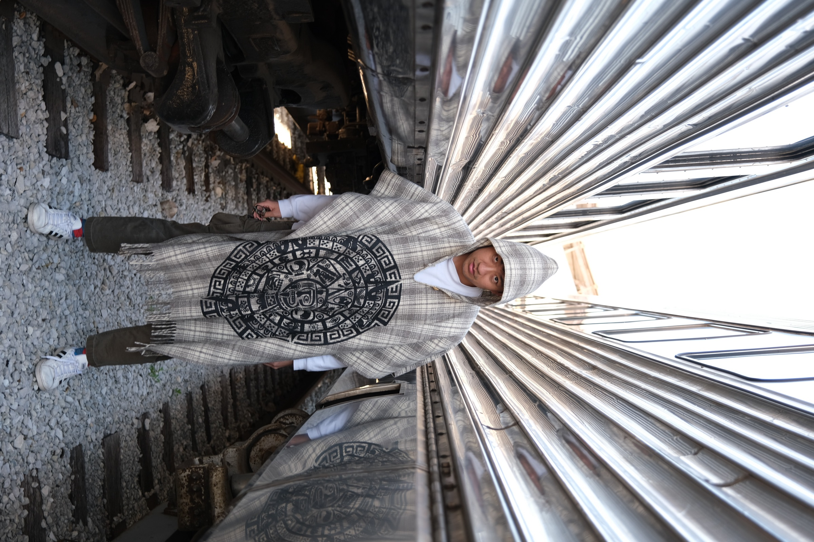
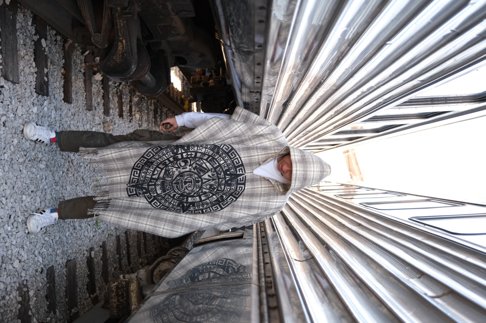
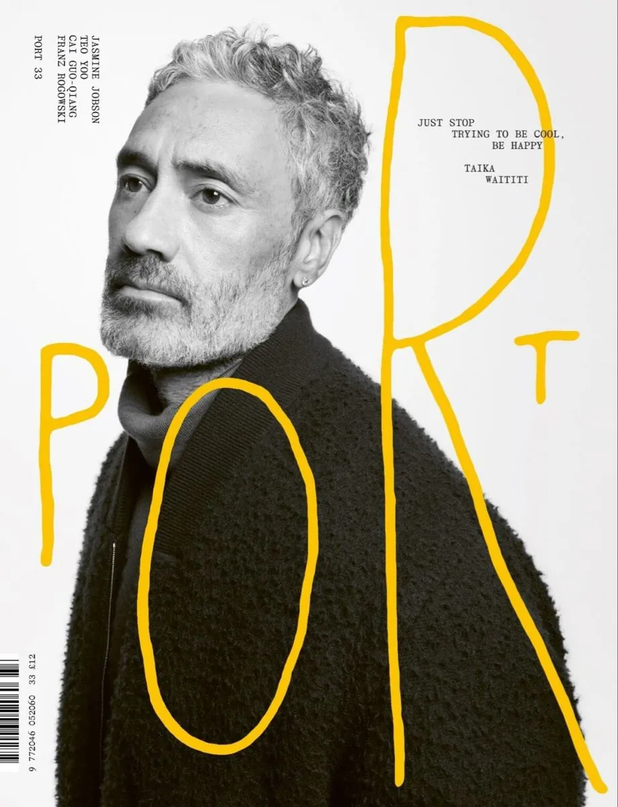
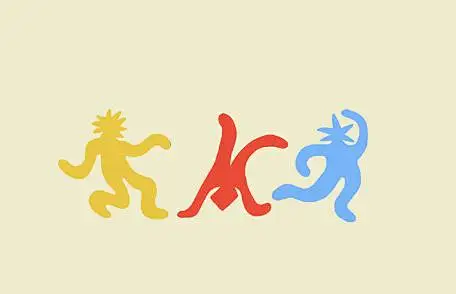
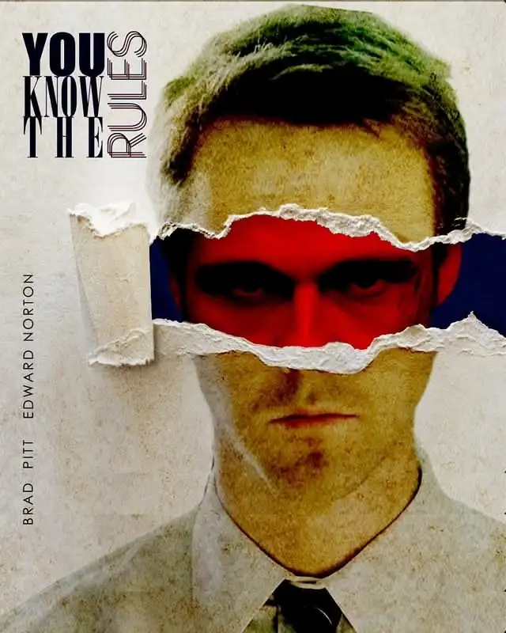

AI Builder / Tutorial Creator / Digital Explorer
Xiaoyu Lab
我把 AI 工具、自动化工作流和教程内容做成可以上手体验的项目。这里是作品、教程、合作方式和个人兴趣的入口。
Live Demo + GitHub
Projects that can be inspected, forked, or played with.
默认从 GitHub 同步最近更新的公开仓库；有 homepage 的仓库会显示 Demo 入口。这里适合放你最能代表技术能力的产品原型。
Featured build
BettaFish
多 Agent 舆情分析助手，用来还原信息结构、观察观点流动，并辅助做趋势判断。它可以作为首页最强的 live demo 项目。
Tutorials / Field Notes
把项目拆成可复用的教程和工作流。
这里可以同时放视频教程、GitHub 图文教程、课程笔记和可复现模板。第一版先用 GitHub 作为内容源，之后可以接 YouTube、Bilibili 或 MDX。
AI Developer Skills
适合沉淀 AI 开发技能、提示词、agent 工作流和本地工具链。
Open notesPresentations by AI
把 AI + code 的问题解决过程做成可分享演示，适合变成课程或公开分享。
Open deck repoNuxt Tutorial
保留早期前端学习路径，后续可以升级成现代 Web 开发教程合集。
Open tutorialVideo channel
预留给 YouTube、Bilibili、游戏视频或 vlog 合集；绑定频道后可自动展示最新内容。
Plan contentWork With Me
合作方式要像菜单一样清楚。
让合作方快速判断你能做什么、适合什么项目、怎样开始。这里的文案可以按真实报价和档期继续细化。
Prototype Sprint
1-2 周把想法做成可演示的 AI 工具、自动化流程或交互式 Demo。
Agent Workflow
把重复的信息收集、分析、生成和分发任务改造成半自动或全自动系统。
Technical Content
共同制作教程、课程、演示文稿和产品化技术内容。
Creative Web
为个人品牌、活动、产品或研究项目设计可发布的高质感网页体验。
Start a conversation
先从一个清楚的问题、项目或 demo 目标开始。
Playground
技术之外，保留一点不解释的个人风格。
游戏视频、vlog、旅行片段、奇怪素材和日常实验都放在这里。它不负责证明能力，只负责让网站像一个真实的人。



